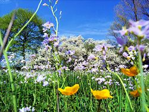

Time for Spring!
Season of rebirth
Welcome to Spring!

Welcome to the season of spring, Spring is one of the 4 seasons of Earth that comes before summer but is after Winter where it typically occurs around the beginning or middle of March and ends sometime around June. During springtime, our day and night cycle changes to where our days and our nights become shorter (for whatever reason).

In many Earthly cultures, Spring is often associated with the ideas of rebirth, rejuvenation, renewal, resurrection and regrowth. This is because when you experience the outside world after going through the harsh winter months, you will find that many of the frozen/dead plants are beginning to re-emerge and regrow themselves after those harsh months. The viewing or rebirth in nature reignites a humans passion and allows them to go out and experience the joys of a newly rebuilt world. This can be seen in many of our religious texts such as in Christianity where the rebirth of Jesus is said to take place during these Spring months.